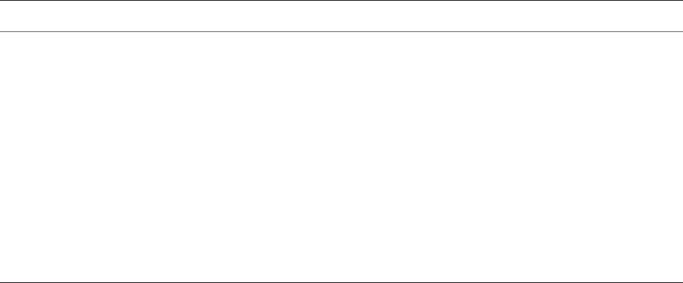
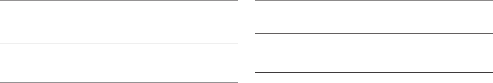

Hindawi Publishing Corporation
Advances in Human-Computer Interaction
Volume 2012, Article ID 389523, 14 pages
doi:10.1155/2012/389523
Research Article
Interactive Language Learning through Speech-Enabled
Virtual Scenarios
Hazel Morton, Nancie Gunson, and Mervyn Jack
Centre for Communication Interface Research, School of Engineering, University of Edinburgh, Edinburgh EH9 3JL, UK
Correspondence should be addressed to Hazel Morton, hazel.morton@ed.ac.uk
Received 30 May 2012; Accepted 5 September 2012
Academic Editor: M. Carmen Juan
Copyright © 2012 Hazel Morton et al. This is an open access article distributed under the Creative Commons Attribution License,
which permits unrestricted use, distribution, and reproduction in any medium, provided the original work is properly cited.
This paper describes the evaluation of an educational game designed to give learners of foreign languages the opportunity to
practice their spoken language skills. Within the speech interactive Computer-Assisted Language Learning (CALL) program,
scenarios are presented i n which learners interact with virtual characters in the target language using speech recognition
technology. Two types of interactive scenarios with virtual characters are presented as part of the game: the one-to-one scenarios
which take the form of practice question and answer scenarios where the learner interacts with one virtual character and the
interactive scenario which is an immersive contextualised scenario where the learner interacts with two or more virtual characters
within the scene to complete a (task-based) communicative goal. The study presented here compares learners’ subjective attitudes
towards the different scenarios. In addition, the study investigates the performance of the speech recognition component in this
game. Forty-eight students of English as a Foreign Language (EFL) took part in the evaluation. Results indicate that learners’
subjective ratings for the contextualised interactive scenario are higher than for the one-to-one, practice scenarios. In addition,
recognition performance was better for these interactive scenarios.
1. Introduction
When learning a foreign language, opportunities for interac-
tion in the target language can be limited. Unlike most other
school subjects, language learning requires oral practice.
A student studying a language in high school may receive
only a few hours of language class per week and may have
very limited one-on-one time with the teacher of the class.
In the classroom situation, it may not be possible, due to
time restrictions and resources, for the teacher to engage in
a spoken dialogue with every student. However, it is neces-
sary for language learning that the learner has an interlocutor
with whom to interact.
It has been found that classroom exercises which are
detached from real-life issues or activities fail to help the
learner use the target language [1, 2]. Learning activities
therefore focus less on the (correct) use of forms in a context-
free learning environment in favour of using the language for
a communicative purpose. Games are used in language learn-
ing to stimulate motivation and to create communicative
opportunities for learners [3]. Interactivity and individual
action are fundamental properties of games and can be
related to communicative approaches to language learning
[4], where the focus is on communicating in the target
language for meaning.
Simulation games are frequently used in language learn-
ing. Simulations offer learners the opportunities to be
actively involved in the interactions in the target language.
Simulations and role play follow an interactional view of
language. The interactional perspect ive “sees language as a
vehicle for the realization of interpersonal relations and for
the performance of social transactions between individuals”
[5, page 17]. Simulations offer the learner the opportunity
for the development of their language in a given social con-
text. Research has suggested that simulations can facilitate
second language acquisition; learners acquire language when
they are exposed to comprehensible input, and they are
actively involved and have positive affect [6].
It has been suggested that language teaching should shift
towards experiential learning where the learning occurs in
contextualised or situational environments, and language
forms are introduced during social activities [7]. Using
2 Advances in Human-Computer Interaction
simulations in a learning environment can offer students
an opportunity for experiential learning, as they support
“learning by doing” approaches [8]. In addition to exposure
to comprehensible input, simulations can offer the learner
the opportunity of expressing themselves in the target
language w ithin a relevant context. The interactions that
learners make are part of the process of language learning
and can have an effect on their language development. The
use of simulations in an educational environment allows the
learner to experience situations in which their decisions have
real and immediate consequences.
The interaction hypothesis [9] states that conversational
interaction between a learner and, for example, a native
speaker can facilitate the learner’s development as the learner
can be involved in negotiated interaction which then gives
them comprehensible input in the target language (L2).
The approach described here builds on the interaction
hypothesis to create situations in which a learner can engage
in meaningful spoken interactions with the computer, and
whose interactions can be negotiated in order that the
learner can develop their oral language in the L2. In this
game, learners can engage in negotiated interaction with
the virtual agents. The agents act as the “audience” for the
learner’s oral language output. Learners’ output in language
learning is thought to be a necessary condition for language
learning [10]. One of the key aspects in the design of
the game was to consider the application as being one of
the conversational participants in the L2 interaction. “It is
useful to view multimedia design from the perspective of
the input it can provide to learners, the output it allows
them to produce, the interactions they are able to engage
in, and the L2 tasks it supports” [11]. The virtual agents are
able to offer feedback to the learner’s utterances as well as
continue the dialogue with the learner through a number
of conversational turns within the defined context of the
language lesson.
The language learning game described here creates
contextualised scenarios which are simulations of real
world situations in which learners can engage with v irtual
characters to practice their oral language skills. The game
uses speech recognition, so the learner can interact with
the system through speech in a simulated, and suitably
constrained, environment; virtual agents and virtual worlds
are used to depict a context in which the learner can
engage in a conversational dialogue with the computer.
Within this context, two different kinds of interaction are
available between the learner and the virtual characters:
the one-to-one scenarios and the interactive scenarios. The
twoscenariotypesdiffer in their p edagogical intent. The
one-to-one scenarios allow the learner to interact with one
virtual character in a series of question and answer turns,
which represent a practice session of the key linguistic topics
and forms for the given topic. The interactive scenario
allows the learner an opportunity to interact with two or
more virtual characters within a highly contextualised scene
in order to accomplish a relevant task. In this study, we
sought to investigate the one-to-one scenarios separately
from the interactive scenario as the different contexts of
interaction could influence the way in which the learner
chooses to interact with the system. Firstly, there may be
differences in user attitudes and response types the learner
makes as they progress through each of the scenarios in
the “lesson.” Secondly, there may be differences across these
scores and the recognition performance between the scenario
types.
Previous studies have been conducted using the program
to investigate overall attitudes towards using the program
for learners of Italian and Japanese [12], to investigate
motivation [13], and to investigate help strategies [14]. The
purpose of the study described in this paper is to investigate
learner perceptions of and attitudes towards the speech
interactive CALL game and how these attitudes change as
the learner progresses through the game and for the different
speech interactive scenarios. This paper first descr ibes the
various components of the speech interactive ga me and then
provides details on the design. The experimental evaluation
is then presented. Data are presented on learner attitudes
towards interacting with the characters. In addition, learner
response data on the utterances made while interacting
with the characters are presented together with performance
data on the speech recognition component of the different
scenario types within the game.
2. Speech Interactive Language Learning
An important aspect of learning a foreign language is
becoming comfortable and confident with speaking in the
target language. However, for many learners of foreign
languages; there are limited opportunities for practicing
speaking in the target language. By using speech recognition
technology, CALL programs can create more opportunities
for learners to practice speaking in the target language and
develop their oral language skills. Although a speech-enabled
CALL program could not replace one-to-one interaction
with a native speaker, it may be possible to offer a more
realistic and beneficial simulation in a way that is absent from
most CALL materials.
Virtual modelling can create animated characters with
which users can interact, and virtual environments can be
modelled in which the interaction takes place, which may
increase the sense of immersion. Thus, immersive virtual
scenarios can be entered by learners as places to practice their
oral language skills in the target language.
2.1. Virtual Agents. Virtual agents endowed with speech
recognition competency, otherwise known as embodied
conversational agents, can introduce a social aspect to
the interface. The term “embodied conversational agents”
refers to humanlike or cartoon-like animated characters that
often appear in computer interfaces [15]. The agents are
endowed with conversational capabilities primarily through
speech output generation (either synthesised or recorded
speech), speech recognition software, and natural language
processing. These agents are thought to “anthropomorphise”
the interface by bringing lifelike qualities to the interaction:
they can react to user’s speech input and are capable of verbal
and nonverbal output.
Advances in Human-Computer Interaction 3
Virtual agents or animated agents are being increasingly
used in computer user interfaces to offer a more personalised
interaction between human and computer. Animated agents
have also been used in pedagogical applications in which
such pedagogical agents are defined as “lifelike characters
that facilitate the learning process” [16]. Pedagogical agents
have been used in a number of applications such as a 2D
animated agent used to support students during medical
problem solving activities in a web-based learning environ-
ment [17] and a 3D animated agent immersed in a simulated
virtual world used as a teaching aid for engineering students
[18]. Agents have also been used in a language training
program for US soldiers [16, 19]. In this application, the
agents reside in a highly contextualised 3D environment in
which the interactions take place.
Early research in the use of animated agents in peda-
gogical applications has shown such agents to be effective
when used in tutoring systems in which they can improve
the learning experience by engaging students in effective
conversations with their agent [20]. In addition, it has been
shown that students who learn w ith an animated agent work
harder to understand the lesson material than students who
learn in a text-based environment [21].
The use of animated agents within the contextualised
virtual world used in the CALL game described here offers
the learner an opportunity for one-to-one conversation,
designed to contribute to an enhanced learning experience.
Animated pedagogical agents have been show n to “increase
the computer’s ability to engage and motivate students” [22].
In the context of CALL, it has been suggested that it may be
important for learners to have an audience for their linguistic
output so that the learners can “attempt to use the language
to construc t meanings for communication rather than solely
for practice” [11]. In this way, animated pedagogical agents
could serve as the cyber audience for language learners’
output.
2.2. Virtual Worlds. Virtual reality has been defined as “an
event or entity that is real in effect but not in fact [23]”.
In their use of virtual environments, users may experience
presence, that is, the subjective sense of “being there” in the
virtual world [24]. The underlying assumption is that if users
experience such a sense of presence in a virtual environment,
they will come to behave in the virtual environment in
a way that is similar to the way they would behave in
a similar environment in the real world. Indeed, Transfer
appropriate processing asserts that memory is optimum in
retrieval environments which closely match the environment
in which the mental process was encoded [25]. Thus, if
learners have the opportunity to practice skills in the virtual
environment that are similar to skills needed in the real
world task, the skills learned there are likely to carr y over
to similar situations in the real world. Virtual environments
offer features that are superior to video presentations because
of the sense of presence in the environment c reated through
the manipulation of certain aspects of that environment and
because of the interactivity they allow. The virtual worlds
presented to the learner in the game reported here offer
a highly contextualised environment in which the learner
can first observe the interactions between the virtual agents
and then can enter the environment as an active dialogue
participant.
2.3. Speech Recognition in CALL. The role of automated
speech recognition technology in CALL programs has been
explored for m ore than a decade, having been used for
pronunciation practice in CALL programs [26–29]ortohelp
learners with their fluency or conversation skills [16, 30–
33]. Many CALL programs which utilise speech recognition
technology for language learning are based on stra tegies
where the learner selects their (spoken) response from
a finite list offered by the CALL program itself. Such
strategies have been used to effect in pronunciation training
programs, although their utility is lower in the context of
conversational programs. For programs designed to offer
learners the opportunity to practice their conversational
skills, providing a predefined list of utterances from which
the learner can select their spoken response is limiting, as the
learner is thereby restricted to use the utterances offered in
the list rather than having the opportunity to formulate their
own (even incorrect) utterances.
A challenge for speech interactive CALL is to create
opportunities for learners to interact through speech with the
program in a way that pushes them to develop their language
skills by being able to formulate their own responses
rather than choose from a preselected list. The CALL game
described in this paper permits learners to respond openly,
rather than selecting a response from a given list, by engaging
in a spoken dialogue with the virtual characters, albeit within
a defined lesson context.
3. Language Learning Game Design
The aim in the game is for learners to engage in a dialogue
with the virtual characters w ithin a defined context. The
lesson content design used in this program adheres to a task-
based approach in which the language is used to perform
communicative tasks. Each individual lesson has an ultimate
communicative goal (e.g., ordering food and drinks in a
caf
´
e), and each lesson focuses on the language required for
this communicative goal. In the design of the lessons, the
communicative goal of the lesson is defined and the necessary
language to complete the goal of the lesson is then scripted
into the scenarios.
Based on the interaction hypothesis [9], the virtual
characters are designed to offer modifications of their input
in cases where the learner appears to be having difficulties.
Interaction provides learners with opportunities to receive
comprehensible input and feedback [9, 34, 35]. Further,
interaction allows learners to make changes to their own
linguistic output [10, 36]. In the game, the learners are not
told in advance what to say, nor are they given a finite list
from which to choose their utterances; the speech recogni-
tion grammars are programmed with predicted responses for
each individual stage of the dialogue, accounting for gram-
matical and some ungrammatical responses. This design
4 Advances in Human-Computer Interaction
poses a challenge for the speech recognition component with
respect to how accurately the system is able to process the
learners’ responses.
Implicit feedback is preferable to corrective feedback
for speech interactive CALL systems, as implicit feedback
is likely to minimise potential problems resulting from
imperfect speech recognition [37]. Feedback in the game is
given implicitly in the form of recasts and reformulations.
If the system detects that the learner has made an error in
their utterance, the animated character recasts the lear ner’s
utterance. If the learner does not respond, the animated
character repeats the question. If the system detects that
the learner has given an answer that is not appropriate to
the given stage, the system “rejects” this and the animated
character reformulates the question, possibly offering a hint
to the learner. These feedback strategies allow the dialogue
with the learner to continue without explicit reference to
a problem. This has the advantage of continuing the flow
of the dialogue (and where necessary giving the learner
another opportunity to respond, or implicitly correcting
their response), and by being implicit in the feedback, this
minimises attention to any potential errors made by the
speech recognition component.
The program offers the learner three scenario types
within each “lesson”: observational, one-to-one, and inter-
active. Supplementary materials are also available to the
learners to access if they require vocabulary, grammar files,
a transcription of the observational dialogue, and cultural
information.
3.1. The Observational Scenar io. In order to provide the
learner with the concepts required for the communicative
goals of the lesson, the game contains an observational
scenario which depicts a spoken dialogue between multiple
characters within the defined context of the lesson. The
key linguistic constructions relevant to the scene and which
are useful for the learner in the subsequent scenarios are
presented in the observational scenario.
The observational scenario contains a number of virtual
characters situated within the virtual world (e.g., in a graph-
ical representation of a “railway station” or “restaurant”).
The virtual characters exhibit speech, gesture and facial
animation, and manipulation of objects in the environment.
They “speak” by means of prerecorded audio files. The
virtual characters interact with each other in the target
language, utilizing key linguistic structures appropriate for
the given context. The learner observes this interaction
and has control over the interaction in that they can
pause, stop, and restart the dialogue and can access features
to assist their understanding if required (e.g., vocabulary
information or subtitles of the dialogue). The observational
scenario presents the language relevant to the scene in
a contextualised environment. The use of this observational
scenario also gives the learner the opportunity to become
accustomed to the virtual world in which the y will become
an active participant in the interactive scenarios, and it
offers aural practice of the language within the contextualised
environment.
3.2. The One-to-One Scenarios. Building on the exposure to
the observational scenario, the one-to-one scenarios offer
the learner the opportunity to practice key linguistic features
by responding to questions on the related topic prior to their
participation in the interactive scenario. In this way, they
act as training scenarios for the learner before their ultimate
immersion in the interactive scenario. The one-to-one
scenarios involve one virtual character who asks the learner
a series of questions relevant to the lesson topic. There is
no movement around the scene, thus allowing the learner’s
focus to be on the virtual character and the questions
asked. These shor t excerpts of dialogue are designed to ask
the learner key questions related to the topic and feature
a controlled degree of repetition in the questioning, as well
as instr uctional support, mainly in the form of (implicit)
feedback in the learner’s responses.
When learners hear and comprehend language, the input
is thought to be held briefly in their short-term memory
and can be replaced with any forthcoming input unless
the learner can focus their attention s o that further mental
processing can occur [38]. This further mental processing has
been described as the process of going from input to intake
[39]. Therefore, it is important in instruction to consider
how to create opportunities for learners to be exposed to
repeated occurrences of new language input, giving learners
more opportunities to attend to the input they are exposed
to, because the more the student pays attention to the input,
the more the student is thought to learn [38]. Therefore, the
shorter dialogue excerpts used here are designed to expose
the learner to the structures of the language a number of
times in order that they have more opportunities to pay
attention to these structures.
In this research, participants completed two one-to-one
scenarios: About Train Times and Journey Details. In the
About Train Times scenario, the virtual character asks the
learner some questions about the departure and arrival times
of trains in Great Britain. To the side of the character on
the screen is a timetable depicting the times. In the Journey
Details scenario, the virtual character first asks where the
learner would like to go. This dialogue stage is accompanied
by a pop-up of a map of Great Britain, with 6 cities in each
detailed. Following an appropriate response (i.e., the learner
gives the name of a city, either in a one-word form, phrase,
or full sentence response), the character then proceeds to ask
about the departure and arrival times of the train to that
city and the platform from which the tr ain departs (again
a timetable is displayed for these dialogue stages to the side
of the virtual character). Following the completion of all four
stages in the scenario, the character then summarises all the
responses.
The one-to-one scenarios incorporate various levels of
instructional support for the learner, both through spoken
audio prompts from the virtual character and also in the
form of text help menus within the scenes for cases where
the learner is experiencing some difficulties. Additionally, the
virtual tutor character offers implicit spoken feedback to the
learner when the learner’s utterance has been ungrammati-
cal. As the one-to-one dialogue scenarios offer individualized
practice of key linguistic features, they have to cater to
Advances in Human-Computer Interaction 5
individual learner preferences and abilities and have to be
able to deal with a variety of response types from the learner,
such as one-word, phrase, or full sentence responses. In
cases where the response was not appropriate for the given
dialogue stage, or the learner has not given a response, the
system initiates the reformulation strategy, which in this case
would first give the learner another opportunity to respond
to the same question and subsequently give a hint to the
learner if necessary.
For example,
Virtual Character: Where would you like to go?
Learner: (no response made)
Virtual Character: Where would you like to go?
Learner: Um.
Virtual Character: I would like to go to Oxford.
Where would you like to go?
In cases where the learner makes a response that is
appropriate for the particular dialogue stage, but makes
a grammatical error or responds with a one-word reply, the
system initiates the recast strategy where the virtual character
recasts the learner’s response in a full sentence before moving
on to the next dialogue stage. This provides additional input
to the learner in the form of implicit feedback.
For example,
Virtual Character: Where would you like to go?
Learner: I go to Oxford.
Virtual Character: I see. You would like to go to
Oxford.
It should be noted that this full sentence recast approach
is only implemented in the one-to-one training scenarios.
The more immersive interactive scenario did not use a full
sentence recast for cases where the learner did not produce a
full sentence utterance.
3.3. The Interactive Scenario. The interactive scenario pro-
vides the learner with the most immersive and true-to-
life simulation of the given environment in which they
can practice their spoken language skills. The learner’s
participation is necessary for the interaction between all
dialogue participants (the learner and the virtual characters)
in this scene to continue. In the interactive scenario, the most
likely flow of possible interactions is scr ipted, and alternative
paths are created, which allows a v ariety of inputs from the
learner. The learner interacts through speech with the agents,
but in contrast with the one-to-one scenarios, the agents
respond appropriately through a number of conversational
turns, which results in an appropriate dialogue relevant to
the scene.
The camera viewpoint is from the learner perspective,
as if through the learner’s eyes, and hence a virtual rep-
resentation (avatar) of the learner is not depicted. Instead,
the viewpoint creates the impression that the learner is in
the scene with the characters. The viewpoint also changes
as the dialogue moves forward. As an example, the initial
Figure 1: Virtual characters in interactive scenario “At the Station.”
viewpoint is from the front of the scene, as if walking into
the railway station ticket office. The viewpoint then pans
into the room towards the ticket agent with a slight up-
and downward motion to indicate the learner walking to
the ticket booth. Multiple interactions occur between the
“friend” char acter and the “ticket seller” character with the
learner and with each other. Addressing each other is made
with gaze behaviours between the characters and the learner.
The distance between the learner and the characters and
the angles at which they are standing are such that it is
obvious when the learner is being addressed and when the
characters are in interaction with each other. This first-
person perspective, which changes dynamically throughout
the dialogue, was designed to create a sense of immersion for
the learner.
Within this multiagent environment, it is apparent who
is being addressed at any one time by the gaze of the
virtual characters. The learner is directly addressed by the
characters, and the characters are able to hand items within
the scene to the implied body of the learner. In order to
further stimulate immersion and participation, various items
are used in the scene, relevant to the given context. When the
learner orders the train tickets, a departure timetable b oard
appears on the screen behind the ticket seller agent. Once the
learner successfully orders their required tickets and relevant
time of departure, the ticket seller character passes the tickets
to the learner. This represents the feedback from a game
perspective, whereas the virtual character’s reformulations
constitute feedback from a linguistic-instructional perspec-
tive.
Interacting in the interactive scenario allows learners
to practice within the virtual setting the key transactional
language necessary for train tickets in the target language.
Figure 1 depicts the virtual characters in the interactive
scenario.
The goal of the interactive scenario is to purchase tickets
to the learner’s preferred destination in the host country.
The ticket seller asks the learner where they would like to go
and subsequently takes them through a series of questions
6 Advances in Human-Computer Interaction
in order to sell the train ticket. The first question asked
is an open question: Hello, how can I help you? This open
question allows a number of responses in the grammar files:
destination, number of tickets, and ticket type (single or
return). Therefore more advanced learners can try out more
complex responses, which contain more than one piece of
information.
However, the system is also designed to accept any one
of those pieces of information if that is what the learner
supplies. If the learner is unable to respond to the open
question, the dialogue moves into direct questioning which
requires a simple yes or no response: Would you like to
buy tickets? From here, the dialogue then directs the learner
into a series of questions to determine their requested ticket
purchase. The potential destinations from which the learner
can choose are constrained to a total of six. These are
depicted on the timetable screens above the ticket counter.
Each destination has two corresponding departure times.
Once the learner selects one of the given destinations, the
ticket seller then asks which train they would like to take.
The corresponding departure times grammar files are then
selected in the code. In the cases where the learner has
difficulty in selecting a departure time, a reformulation
strategy is used where the ticket agent then offers the learner
the choice of these two departure times. For example, if the
learner selec ts “Oxford” as their destination but has not been
able to select their preferred departure time, the ticket agent
then asks: At what time would you like to leave? At 11:15 or at
3:30?
Once the learner has completed all questions relevant to
the ticket purchase, the ticket seller hands the learner the
required number of tickets.
3.4. Agent Animations. The agents are created in Virtual
Reality Modelling Language (vrml) for mat with joints and
body parts suitable for conversion to H-Anim 1.1 format,
which allows the agents to be fully animated. Agent anima-
tions such as nods of acknowledgement and hand gestures
were deemed important in creating the appearance of
a realistic conversation with the agent. In the creation of
a virtual agent, appropriate facial expression and gestures
can be added to give a lifelike quality to the agent.
These nonverbal behaviours are an important part in the
perception of believability of the agent. Gestures can g ive
an added dimension to the agents’ speech. With gesture,
the agent can indicate objects w ithin their virtual context
through deictic gestures, can refer to other agents in the
scene or to the user of the application, and can draw users’
attention to aspects of the virtual context. Facial animations
can offer the user some insight into the agent’s state;
raised eyebrows can indicate surprise, a smile can indicate
happiness, and a frown can indicate confusion. In this way,
gestures and facial animation benefit the listener in that
the listener can read into these non-verbal communications
some information w hich is not expressed in the agent’s
speech. This is potentially useful for a language learner, as the
learner may be able to interpret the agent’s facial animations
in instances of communicative difficulty; for example, if the
agent frowns when they have not understood what the user
has said. The agent may also display some functional gestures
within the scene. Additionally, the agent may display some
listening animations when the user is speaking. The agents
and animations used here were able to display the gestures
and expressions required for each scene; however, they were
somewhat rudimentary. For future applications, an off-the-
shelf product is being considered (Complete Characters
(http://www.rocketbox-libraries.com/) which should allow
a more sophisticated look to our characters.
3.5. Speech Recognition Component. In creating the con-
versational dialogue, a semantic interpretation approach
was adopted. In order to facilitate a spoken dialogue with
the learner, the system must understand the semantic
interpretation of the learner’s utterance. This can be achieved
by including task-relevant semantic information in the
grammar used by the speech recognition component so
that the outcome of the speech recognition process is not
only a literal transcription of the utterance, but also an
interpretation of its meaning. In this design, the semantic
information is expressed within the grammar in the form of
slot-value assignments, where the recognition of a particular
word or phrase leads to the filling of a semantic slot w ith the
information contained in that word or phrase. In addition,
the game is designed to offer feedback to the learners on
their responses. For this to occur, it must also be able to
identify ungrammatical utterances that have been predicted
and preprogrammed into the speech recognition files such
that if the system detect s that the learner has made an error
in their utterance, the virtual character recasts the learner’s
utterance.
In the game, we used a commercially available speaker-
independent recogniser (Nuance v8.0), not developed specif-
ically for L2 learning. Therefore the recogniser’s basic
components, including its acoustic models and its language
model, were not trained on nonnative speaker data. Given
the state of the art of ASR applications for L2 learning,
this approach might not seem evident. Using a speech
recogniser that has been trained on non-native speaker
data is seen as preferable in ASR-based CALL applications
[40]. Much interest is focused on the area of speech
recognition programs using non-native speaker models (e.g.,
[41, 42]). Acoustic models for language learning applications
have been trained on L2 speech only [43]orL1(first
language) and L2 (target language) models used in parallel
[44]. However, since our overall project aim was to create
language games in a variety of L2 languages, equally with
a variety of different L1 backgrounds, we used a commer-
cially available recogniser that supports recognition engines
for many different languages.
As described, the speech recogniser used in this game
was trained primarily on native speaker models. In this
recognition component, we were unable to change the
acoustic models. However, we adapted the recogniser lexicon
to include alternative pronunciations for each language
pair, in consultation with language teachers. (It should be
noted that this approach is somewhat limited in comparison
Advances in Human-Computer Interaction 7
.Destination
[
DestinationOK
DestinationError
]
DestinationOK [
(i [want (would like)] to go to Dest:d)
]
{return($d)}
DestinationError [
(?it’s Dest:d)
(to Dest:d)
(?i go to Dest:d)
(?i [want (would like)] ?to go Dest:d)
(?i going ?to Dest:d)
]
{<command recast> return($d)}
Figure 2: “At the station” recognition grammar extract.
to mixed acoustic models as only those phonemes present
in the L2 acoustic models could be used in adaptation of
possible L1 tra nsfer errors.)
In addition, the recognition grammars (the language
model) in the program were created specifically for non-
native speaking learners using the lessons, including both
grammatical and ungrammatical utterances constrained to
each stage in the interaction; these recognition grammars
were coded by hand by the authors. By using individual
recognition grammars for each stage, the possible utterances
at each given dialogue stage in a scenario are constrained,
thus limiting the list from which the recogniser attempts to
make a match. Figure 2 depicts a simplified sample grammar
from the railway lesson for the dialogue stage “Where would
youliketogo?”
This example details the approach taken at every stage
in the dialogue between the system (virtual character)
and the learner. In this example, the top level grammar
(“Destination”) calls two sub-grammars: DestinationOK and
DestinationError. DestinationOK contains a full sentence,
grammatical ly correct response to the given question (such
as “I would like to go to Oxford”). DestinationError contains
accepted responses to the question, which may be incomplete
sentences (such as “Oxford”) or which may contain gram-
maticalerrors.Grammaticalerrorswereaccountedforinthe
grammar recognition files to reflect the kinds of errors that
might be made by the learners. For example, grammatical
errors included preposition omission and subject verb agree-
ment. For example, “IwanttogoOxford” is included in the
recognition files, and is flagged as containing a preposition
omission error. The recast command is triggered if the
utterance is within the “error” category.
4. Evaluation of the Speech
Interactive Scenarios
The experimental evaluation sought to investigate learner
attitudes towards the different speech interactive scenarios
presented in the game and how these attitudes change as
the learner progresses through the game and how they differ
between the one-to-one practice scenarios and the immersive
interactive scenario. In addition, investigation is made of
the types of responses the learners make when interacting
with the virtual characters in the scenarios and the accuracy
with which the speech recognition component handled the
learner responses.
4.1. Participants. A total of 48 students of English as
a foreign language took part in the evaluation of the game;
all the students recruited from the same junior high school
in Beijing, China, and the evaluation took place on location
at the school. In this evaluation, there were 22 males and 26
females. Participants were aged between 14 and 15 years at
the time of the evaluation and had been studying English
in school for an average of 6.8 years. All participants in this
study came from the same junior high school in Beijing.
4.2. Experimental Procedure. Participants were first given
a short tutorial on using the program (using the navigation
and functionality controls, accessing the supplementary
materials). Following this, the participants were asked to
attempt various aspects of the “At the railway station” lesson.
The participants were asked to watch the observational
scenario, then try two of the one-to-one scenarios (here
referenced as O-O1 and O-O2), and then try the interactive
scenario (INT). The participants were informed that they
could access other features in the program, for example, sub-
titles or vocabulary, as they wished. The researcher remained
present during the program use. After each scenario, the par-
ticipants were asked to complete an attitude questionnaire.
During the interactions, the system automatically logged all
the utterances made by the learners in their interactions
for analysis of learners’ response type and to investigate the
recognition performance in this context.
4.3. User Attitude Questionnaires. User attitude question-
naires were administered after each scenario experienced in
by the learners. The usability questionnaire was created in
order to gather attitude data to each of the scenarios that
the participants experienced. The questionnaires contained
items which focused on affective issues, engagement issues,
and issues relating to the interaction with respect to the
dialogue itself and with respect to the content within the
interaction. The attributes are presented in the following.
Affective issues:
(1) degree of control felt by the learner when
talking with the character(s),
(2) degree of embarrassment when talking with the
character(s),
(3) extent to which learner felt relaxed when talking
with the charac ter(s),
(4) extent to which learner felt stressed when
talking with the character(s).

8 Advances in Human-Computer Interaction
Table 1: Overall mean scores speech enabled scenarios.
Questionnaire Statement
“O-O1”
(Mean
= 5.03)
“O-O2”
(Mean = 5.43)
Interactive
(Mean = 5.58)
I felt in control when talking to the character. 4.50 4.90 5.08
I felt embarrassed when talking to the character. 4.31 5.25 5.52
I felt relaxed talking to the character. 4.52 5.58 5.58
I felt stressed talking to the character. 4.42 4.96 5.50
I enjoyed interacting with the character. 5.15 5.46 5.81
I prefer speaking English in class, rather than interacting with the character. 4.75 5.19 5.31
I would be happy to talk to the character again. 5.54 5.77 6.19
I felt that this interaction was useful for my learning of English. 6.33 6.33 6.31
I felt I always understood what the character said. 6.06 6.23 6.38
I felt I always knew how to respond to the character. 5.31 5.65 6.06
I felt that the character did not understand what I said. 4.49 5.27 5.25
I felt the character was difficult to understand. 5.58 5.84 5.90
I felt that the level of the language was difficult for me to understand. 5.81 6.08 6.13
I felt that this dialogue was too easy for me. 3.63 3.44 3.15
Engagement issues:
(5) extent of enjoyment of interacting with the
character(s),
(6) preference for speaking target language in class,
(7) readiness to talk with the character(s) again,
(8) usefulness of interaction for learning language.
Interaction issues (conversational):
(9) extent of understanding what the character(s)
said,
(10) extent of knowing how to respond,
(11) extent of being understood.
Interaction issues (content):
(12) extent of difficulty to understand content,
(13) extent of difficulty of language level,
(14) extent of difficulty of dialogue.
The questionnaire consisted of a series of short simple
statements, each with a set of tick boxes on a Likert [45]
seven-point scale labelled from “strongly agree” through
“neutral” to “strongly disagree.” The polarity of the state-
ments is balanced to avoid the response acquiescence effect,
where respondents may have a natural tendency to agree
with proposals. The set of 14 statements w as used in the
questionnaire for the one-to-one and interactive scenarios.
The questionnaire is a self-administered questionnaire and
had been translated into Mandarin for students to complete
themselves.
When analysing the results, responses to the question-
naire are first given a numerical value from 1 to 7; these
values are then normalised for the polarity of the statements
such that a “strongly agree” response to a positive statement
is given a value of 7, whereas a “strongly agree” response to
a negative statement is given a value of 1. After normalisation
of the data, the overall attitude for each participant can be
calculated as a mean of all of the scores on the items in the
questionnaire. These values can then be used to calculate
the overall attitude for all items in the questionnaire across
all participants in the study. Additionally, mean scores for
individual items in the questionnaire can be obtained for all
participants.
5. Results
5.1. User Attitude Results. An overall mean score of 5.03
(on a 7-point scale) was obtained for the first one-to-one
scenario “about train times,” an overall mean score of 5.43
for the second one-to-one scenario “about journey details,”
and an overall mean score of 5.58 for the interactive scenario.
Table 1 details the overall mean scores for the speech enabled
scenarios.
It can be seen that attitude scores for the individual
items increased across the three consecutive speech-enabled
scenarios. Repeated measures analysis was conducted across
the attitude data for the three speech-enabled scenarios.
Comparing the O-O1 against O-O2, it was found that each
of the affective issues scored significantly higher in the second
scenario than in the first. Participants felt significantly more
in control (P
= 0.033); they felt highly significantly less
embarrassed (P
= 0.000); they felt highly significantly more
relaxed (P
= 0.000); and they felt significantly less stressed
(P
= 0.011). The affective issues are significantly better
in the second one-to-one scenario. It appears that as the
participants become more accustomed to the interaction
there is a positive effect on their affective state.
Additionally, a preference for speaking the language
in class, in comparison to speaking with the animated
characters, was highly significantly less in the second scenario
than in the first (P
= 0.000), and the feeling that the
Advances in Human-Computer Interaction 9
Table 2: Response type.
Interaction Participants Utterances Answer only Sentence Verbal non answer
O-O1 48 341 64.5% 29.6% 5.9%
O-O2 48 316 64.9% 32.6% 2.5%
INT 48 452 79.8% 19.2% 0.9%
character did not understand them was highly significantly
less in the second scenario than in the first (P
= 0.009).
Comparing the O-O2 against the interactive scenario
(the second one-to-one scenario was completed immediately
prior to the interactive scenario) found significant differences
amongst some individual items in the questionnaire. Partic-
ipants felt highly significantly less stressed in the interactive
scenario than in the second one-to-one scenario (P
= 0.002);
participants were highly significantly more happy to talk to
the agents in the interactive scenario again (P
= 0.005);
participants were highly significantly more confident that
they knew how to respond in the interactive scenario (P
=
0.009).
The interactive scenario scored highly across all items
in the questionnaire and significantly so in comparison to
the one-to-one scenario for some items. Only one affective
attribute (feeling stressed) was significantly higher between
the interactive and the second one-to-one in comparison to
all affective attributes in the earlier comparison. As learners
progress through the scenarios, it would seem that their
affective state becomes more positive, and therefore feelings
of embarrassment and tension and stress subside. Significant
results for feeling happy to talk with the characters again and
feeling confident in knowing how to respond to the charac-
ters suggest an ease for the learners in their interactions with
the agents in the immersive interactive scenarios.
5.2. Response Data. Participants’ utterances when interacting
with the system were recorded and later transcribed by hand
(by human raters) for analysis of response type as well as
recognition accuracy. The system also logged the recognition
results at each stage of the dialogue.
Participants’ utterances were categorised into three
response types. As the interaction between characters and
learner is a series of question and answer pairs, the shortest
response type that facilitates the conversation is “answer
only.” This is often a one word answer (e.g., two)oraphrase
response (e.g., two tickets please). The second response type
employed is “sentence” which contains a main verb (e.g., I
would like to buy two tickets to Oxford). The third response
type is “verbal non answer.” This final category constitutes
responses where the learner has made an utterance (which
triggers the recogniser) but does not answer the question. For
example, mutterings, thinking aloud, verbal hesitations and
nonlexical noises (e.g., coughs) are included in the “verbal
non answer” category.
Table 2 details the response types for the participants in
the evaluation. The response types are given for the indi-
vidual dialogues within the lesson.
In each scenario, there was a preference for the learner
to respond with an answer only response. However, this
Table 3: In-grammar and out-of-grammar user input.
Interaction Utterances IG OOG
O-O1 341 47.2% 52.8%
O-O2 316 50.3% 49.7%
INT 452 72.1% 27.9%
percentage was much higher in the interactive scenario than
in the one-to-one scenarios. Almost a third of responses
in the one-to-one scenarios were full sentence responses;
whereas, in the interactive scenario only fifth of responses
were full sentences. The one-to-one scenarios, with their
question and answer practice design, is more conducive
to full sentence responses where the learner practices their
grammatical constructions. In the interactive scenario, where
the immersive nature suggests the learner is interacting in
order to accomplish a goal, it is less intuitive to respond with
a full sentence construction.
5.3. Speech Recognition Analysis. The accuracy of the speech
recognition component is analysed by comparing the tran-
scriptions of learner utterances with the output from the
recogniser. The utterances are then grouped into in-grammar
and out-of-grammar responses. In-grammar responses (IG)
have been defined in the grammar recognition files (i.e.,
the system developer has predicted and programmed the
exact word-for-word response). Out-of-grammar responses
(OOG) are utterance strings which have not been included
in the recognition grammar files.
Table 3 details the in-gr ammar and out-of-grammar
responses for the participants in the evaluation.
For the two one-to-one scenarios, there was almost an
even split between in-grammar and out-of-grammar utter-
ances. That is, just over half of all utterances produced by
the learners in the one-to-one scenarios were not predicted
by the designers and written into the language model. Given
that the recognition grammars were designed to incorporate
a variety of responses, both grammatical and ungrammatical,
constrained to each individual question in the dialogue, it
is problematic that so many learner responses were out-of-
grammar. Investigation of the responses made by the learners
which were not included in the recognition grammars is
made below (see out-of-grammar recognition analysis).
Looking at the interactive scenario compared with the
one-to-one scenarios, it was found that far more utterances
(72%) were in-grammar in the interactive scenario than the
one-to-one scenarios. This may reflect the higher incidences
of shorter (answer only) responses in the interactive scenar-
ios, given the transactional nature of those scenarios. It does
show, however, that learners made responses which fit into

10 Advances in Human-Computer Interaction
Table 4: In-grammar recognition accuracy.
Interaction
IG
utterances
Word
for
word
Semantic
value
Misrec Reject
O-O1 161 62.1% 71.4% 8.1% 20.5%
O-O2 159 67.3% 79.2% 3.1% 17.6%
INT 326 68.7% 81.0% 1.8% 17.2%
the predicted language model more readily in the interactive
scenario than in the less contextualised one-to-one scenarios.
6. In-Grammar Utterances
The speech recognition outputs for the IG utterances
were analysed in terms of both word-for-word recognition
and semantic value recognition. As the interaction in the
dialogues follows a series of question and answer pairs, a
semantic value is logged for each of the learner’s utterances.
As an example, the question from the program “What time
does the train to Newcastle leave?” mig ht elicit the answer
“it leaves at six o’clock.” In this response, the word-for-
word recognition is the string “it leaves at six o’clock”
which is one of the strings in the grammar; whereas, the
semantic value is “six o’clock.” If the program recognizes
this utterance as “it leaves six o’clock”, the word-for-word
recognition is wrong but the semantic value is correct.
Responses are also categorised where the semantic value is
wrong, misrecognised [MisRec] or where the program rejects
the utterance (in w hich case the reformulation strategy
is employed giving the learner another opportunity to
respond). Table 4 details the recognition accuracy for the in-
grammar utterances.
Across the three scenarios, a similar pattern of word-
for-word and semantic v alue accuracy was found. Accurate
recognition of the semantic value allows the dialogue to
continue effectively between the system and the learner; the
system has “understood” the learner’s response correctly. For
example, in the data, to the question “Where would you
like to go?” one participant answered “I want go Oxford.”
The system recognised this, incorrectly, as “Iwanttogo
Oxford.” In this case, the system was able to respond to the
participant’s answer appropriately (by then asking questions
relating to the departure time of the train to Oxford). The
correct recognition of the semantic value is useful for the
facilitation of the dialogue between the characters and the
learner; however, it does not always indicate that the learner’s
errors have been identified.
A rather high rejection rate of IG utterances was found
across the three scenarios. This is not ideal; however, given
that the users of the system are non-native speakers of the
target language (and of the recogniser’s acoustic models),
it is perhaps unsur prising. Technological limitations can be
mitigated against in the design of the interactions. In this
program, the effect of a system reject at any stage in the
dialogues is that the character repeats or reformulates the
initial question and the learner has another opportunity
Table 5: Out-of-grammar recognition.
Interaction
OOG
utterances
Correct
reject
Recog
semantic
Misrec
semantic
O-O1 180 67.2% 16.7% 16.1%
O-O2 157 63.7% 26.1% 10.2%
INT 126 69.0% 26.2% 4.8%
to respond to the question. Although this does not hinder
the dialogue between the system and the learner, it may
contribute to participants’ perceptions of the recognition
performance of the application.
7. Out-of-Grammar Utterances
Investigation was made on the out-of-grammar utterances
made by the participants. It is expected that out-of-grammar
utterances should be rejected by the system, as the system is
not programmed to “listen” for these utterances. However,
although these utterances are out of grammar, the system
may misrecognise some of these utterances for something
within the recognition grammars. Analysis of the out-of-
grammar utterances classifies the results into three cate-
gories: correct rejection of the utterance, recognition of the
correct semantic value of the utterance or misrecognition
of the semantic value of the utterance. For example, an
utterance may contain a mid-utterance repetition, which
would not be included in the recognition grammars. How-
ever, if the system then misrecognises this utterance for
an utterance that is in the recognition gra mmars and the
value of the recognition is accurate, then the system will
proceed appropriately. Note that as with the semantic value
recognition in the IG utterances, these correctly recognised
semantic value utterances would not necessarily trigger the
system to offer feedback to the learner in the form of recast.
Again, they only indicate those utterances where the dialogue
proceeds with the response that the par ticipant intended.
Table 5 details the category types for the out-of-grammar
utterances across the two groups.
The majority of OOG utterances across all three sce-
narios were correctly rejected by the system. Such utter-
ances include utterances in the participants’ first language
(thinking aloud), non-lexical responses, or hesitation noises
as well as responses that are inappropriate to the question
asked. With regards to these utterances, the system handles
the responses by reformulating the question and giving the
user another chance to respond. That is, even though the
system designer has not predicted the response made here by
the learner, by correctly rejecting the utterance, the system
handles the response appropriately. A sizeable minority of
OOG utterances were recognised with the correct semantic
value. These utterances often include short disfluencies in
the learner’s utterance or self-repairs which entailed the
utterance w as OOG ; however, the system recognised the
utterance with the intended semantic value. An example of
a self-repair in the data which resulted in the recognition
Advances in Human-Computer Interaction 11
of the correct semantic value is the response “nine fifty in
the aft- in the evening” which was recognised as “nine fifty
in the evening.” In these cases, the responses are technically
out-of-grammar, however, the outcome of the recognition
is an accurate response (as far as the user is aware). It is
not possible to account for every possible user disfluency in
the language models. Although the design of the recognition
grammars incorporates user disfluency at the beginning of
an utterance (e.g., “eh nine”), other disfluencies are not
programmed into the recognition grammars.
Finally, the one-to-one scenarios produced a sizeable
minority of utterances which were misrecognised with
the wrong semantic value. The Interactive scenario only
produced a very small percentage of such utterances. These
are the most problematic as they are likely to cause confusion
on the learner’s part. Analysis of these OOG misrecognitions
highlig h ted that there were some problems (which also
occurred in the IG misrecognition results) with similar
sounding time responses. For example, in the data there were
multiple misrecognitions of “thirteen”for“thirty,” “ fourteen”
for “forty”and“fifteen”for“fifty,” and vice versa. Similar
sounding responses can be avoided in the design of the
dialogues by careful dialogue planning. However, in cases
where it was felt that restricting the dialogue to exclude
similar sounding expressions (which in the case of time
expressions may not be appropriate), the CALL program
designer could mitigate against such potential recognition
errors by employing an additional confirmation stage where
the virtual character seeks confirmation from the learner on
their response (e.g., “Did you say “ten o’clock”?”). Such a
strategy may mimic what would o ccur in a real-life situation
if the coparticipant in the dialogue was unsure of what was
said.
8. Discussion
The results of the evaluation indicate that speech interactive
CALL systems are potentially very useful for language
learners, despite misrecognitions by the speech recognition
component. Analysis of the speech recognition component
found in-grammar semantic value accuracy rates of up to
81% for the interactive scenario. However, word-for-word
recognition per formance was as low as 62% indicating that
the recognition component is not robust enough to accu-
rately determine exactly what the learner has said (within this
open dialogue design). Regardless of recogniser inaccuracies,
user attitude results indicate a high level of engagement
and enjoyment with using the system. This is in accordance
with research into the use of automatic speech recognition
in CALL applications [32], which found that despite the
limitations of the speech recogniser and the misrecognitions
it generated, end users enjoy the interactions with the system
and would prefer a speech interactive component to be
included in the CALL application. This was also found in a
previous ev aluation of the software described here [12].
There are limitations to the open dialogue approach
used in this program in the more difficult one-to-one
scenarios. Contextualised help is provided in the immersive
interactive scenario, which lends itself to more natural,
shorter responses within the given context which is optimal
for the speech recognition technology. The one-to-one
scenarios are similar to traditional question and answer
response typ e which are akin to the teacher in class asking
a question that they know the answer to already. The
interactive scenario is a more genuine question and answer
where the responses lead to a communicative goal.
The design of the game, with open speech dialogue
is optimal for the immersive contextualised interactive
scenario. Users responded naturally in short answers which
felt “right” and which was an easier challenge for the speech
recognition technology. The interactive scenario design is a
good fit for the technology and for the ways in which users
interacted with the virtual characters.
Investigation of user responses in this study found that
there was a tendency for shorter responses in the interactive
scenarios in comparison with the one-to-one scenarios.
With regards to coverage in the recognition grammars,
participants in this study made responses which fit into the
language model of the interactive scenario far more than
in the one-to-one scenarios. In designs where the learner
has to select a response from a finite list, the recognition
grammar is fully constrained to those given responses.
However, when there is no list from which the learner
can choose their response, the recognition grammars must
include a variety of possible responses, both grammatical
and ungrammatical. Given the number of out-of-grammar
responses was around the same as the in-grammar responses,
it would appear that this approach is not usable. However, in
the investigation of the out-of-grammar recognition results,
we found that the majority of the responses were correctly
rejected by the system (thus allowing another chance for the
learner to respond), and a sizable minority of responses were
recognised with the user’s intended meaning.
On the whole, grammar coverage for the interactive
scenario was measurably higher than in the one-to-one
scenarios. That is, participants in this study produced
responses which were included in the recognition grammars
much more frequently in the interactive scenario than in
the one-to-one scenarios. Therefore, it was easier to predict
learner responses in the interactive scenario. In addition,
participants tended to produce fewer hesitancies in their
responses in the interactive scenar io. Observation suggests
this may be due to the fact that the physical context and visual
cues in the interactive scenario served to make the meaning
of the questions clearer, resulting in a higher proportion
of in-grammar responses. Moreover, the situational context
encourages the use of brief or one-word answers reducing
the risk of an out-of-grammar response. For example, in
response to the question “How many tickets would you like?”
the reply “Two please” would be a natural response in
conversation. To respond with a complete sentence such as
“I would like two tickets please” inthiscaseismorelikelyto
appear unnatural.
It should be noted that each participant in the experi-
ment experienced these scenarios in the same order. It was
important to see if there was any effect on participants’
attitudes towards interacting within the scenarios over time
12 Advances in Human-Computer Interaction
and more experience. As the Interactive scenario builds upon
concepts and constructions which have been practised in
the one-to-one scenarios, it might be expected that attitudes
towards this scenario are more favourable than towards the
one-to-one scenarios.
Allowing the learner to formulate their own responses to
the animated agents’ questions, rather than selec ting from
a predefined list, provides a facilitative environment for
language learning. However, this poses a serious challenge for
both the designer in terms of predicting learners’ responses
and the recogniser in having to match the response against a
potentially lengthy recognition grammar.
The interactive scenario produced higher user attitude
scores and better recognition, suggesting that this type of
scenario is better suited to the technology limitations. It
seems that interactive scenarios, where the communicative
activity is highly contextualised, are more conducive to this
type of open response dialogue design. While maximising the
potential of ASR in speech interactive CALL, such interactive
scenarios, or participatory dramas, also serve to motivate
learners and reduce their inhibition [46].
The user response types show that learners were produc-
ing shorter responses in the interactive scenario and therefore
potentially not pushing their linguistic capabilities in the
target language in this context. The study shows an overall
favourable attitude towards each of the scenarios and in
particular the interactive scenario. The benefits to the one-to-
one scenarios are the extended practice of the key linguistic
forms and vocabulary for the given context. However, in
future studies, an alternative approach restric ting the variety
of responses expected may be preferable without negatively
impacting the learners’ experience.
In this study, the focus was the learners’ attitudes towards
the scenarios, the responses the y made, and the recognition
performance. We did not investigate any effect of using
the program on the learners’ ability in the target language.
Learners responded strongly that they felt the interactions
were useful for their learning of English (6.3 on a 7-point
scale), but no objective data was gathered in this area. Future
experiments could include some pre- and post-testing of the
key linguistic topics included within the lesson to ascertain
any positive effects on learning.
9. Conclusion: Directions for Future
Research with Scenario-Based CALL
Digital games for learning have the potential to offer an
enhanced learning experience if designers consider the
reasons why computer games are so engaging for learners.
In a review of the literature, Mitchell and Savill-Smith [47]
identified a number of reasons why computer games are so
compelling for users. First, games are visually seductive in
that they “use technology to represent reality or embody
fantasy” [48]. They have an ultimate goal and motivate the
learner via fun [49] and instant visual feedback [50]. Games
provide a complete interactive playing environment [51].
Finally, the ambience information in the digital game creates
an immersive experience, sustaining the user’s interest in the
game [51].
Thus, engag ing computer games offer an immersive fan-
tasy or realistic world along with clearly defined achievable
goals and instant and observable outcomes. Immediate and
interactive feedback is a compelling quality of digital games
[52]. A common element in digital games is where the game
can “respond seamlessly to a player’s input” and therefore
offers “real-time game play that shifts and reacts dynamically
to player decisions.”
Designers of CALL games should look ahead at how
commercial games could inspire the design of educational
applications in order to make them more engaging and
compelling for learners. Adaptation of the interaction or
program could be tailored to suit the individual learner’s
needs. The game or activity must be seen as relevant
and appropriate to the individual user. Activities which
are designed to be fun and engaging can b e found to be
tedious and uninteresting by some users [53]. Commercial
games are demographical ly targeted to specific users and
styles, whereas resources may restrict such variety in learning
games. Customisation of the game could allow the user some
control to make changes to, for example, the skill level, speed
of interaction, complexity of interaction, or time to respond,
in order to make them suitable to the learner’s own needs and
wants.
Good computer games are “pleasingly frustrating” [50]
which are mastered as they are played. Ideally, the game
should be played without the need for consulting instruc-
tions external to the game. In immersive interactive envi-
ronments especially, any halting of the game to deploy or
exhibit instructions to the user could be detrimental to the
immersive aspects of the game. If the system is nonintuitive,
or if instructions are necessary for the game to proceed, the
user has to quit their presence in the game in order to exit
out to receive the instructions.
Taking the video games dimension a step further, learners
could inhabit the virtual world as a “surrogate avatar,” the
virtual character the player is playing [50]. In this way,
the learner must take on the mental states they believe
the virtual character has in their decisions to achie ve the
goals of the game. Thus, the learner has the opportunity to
experience “alternative identities” [54]. This type of virtual
simulation can open up the space to fantasy and thus allow
for a more compelling environment for future spoken CALL
systems.
References
[1] A. Firth and J. Wagner, “On discourse, communication, and
(some) fundamental concepts in SLA research,” The Modern
Language Journal, vol. 81, no. 3, pp. 285–300, 1997.
[2] L. van Lier, “From input to affordance: social-interactive
learning from an ecological perspective,” in Sociocultural
Theory and Second Language Learning,J.P.Lantolf,Ed.,pp.
245–259, Oxford University Press, Oxford, UK, 2000.
[3] M. Warschauer and D. Healey, “Computers and language
learning: an overview,” Language Teaching, vol. 31, pp. 57–71,
1998.
Advances in Human-Computer Interaction 13
[4] B. H. Sørensen and B. Meyer, “Serious games in language
learning and teaching—a theoretical perspective,” in Proceed-
ings of the 3rd International Conference of the Dig ital Games
Research Association, pp. 559–566, Tokyo, Japan, 2007.
[5] J. C. Richards and T. S. Rogers, Approaches and Methods in
Language Teaching, Cambridge University Press, Cambridge,
UK, 1986.
[6] R. Scarcella and D. Crookall, “Simulation/gaming and lan-
guage acquisition,” i n Simulation, Gaming and Language
Learning, D. Crookall and R. L. Oxford, Eds., pp. 223–230,
Newbury House, New York, NY, USA, 1990.
[7] L. van Lier, “An ecological-semiotic perspective on language
and linguistics,” in Language Acquisition and Language Social-
ization: Ecological Perspectives, C. Kramsch, Ed., pp. 140–164,
Continuum, London, UK, 2002.
[8] K. Facer, “Computer games and learning,” NESTA Futurlab
Discussion Paper, pp. 1–11, 2005, http://www.nestafuturelab
.org/research/discuss/02discuss01.htm.
[9] M. H. Long, “The role of the linguistic environment in
second language acquisition,” in Handbook of Second Language
Acquisition, W. C. Ritchie and T. K. Bhatia, Eds., pp. 413–468,
Academic Press, New York, NY, USA, 1996.
[10] M. Swain, “T hree functions of output in second language
learning,” in Principle and Practice in Applied Linguist ics: Stud-
iesinHonourofH.G.Widdowson,G.CookandB.Seidlhofer,
Eds., pp. 125–144, Oxford University Press, Oxford, UK, 1995.
[11] C. A. Chapelle, “Multimedia CALL: lessons to be learned from
research on instructed SLA,” Language Learning & Technology,
vol. 2, no. 1, pp. 22–34, 1998.
[12] H. Morton, N. Davidson, and M. A. Jack, “Evaluation of a
speech interactive CALL system,” in Handbook of Research
on Computer-Enhanced Language Acquisition and Learning,F.
Zhang and B. Barber, Eds., 2008.
[13] H. Morton and M. Jack, “Speech interactive computer-assisted
language learning: a cross-cultural evaluation,” Computer
Assisted Language Learning, vol. 23, no. 4, pp. 295–319, 2010.
[14]H.Morton,N.Gunson,andM.Jack,“Attitudestosubtitle
duration and the effect on user responses in speech interactive
foreign language learning,” Journal of Multimedia, vol. 6, no.
5, pp. 436–446, 2011.
[15] J. Cassell, “Nudge, nudge, wink, wink: elements of face-
to-face conversation for embodied conversational agents,”
in Embodied Conversational Agents,J.Cassell,J.Sullivan,
S. Prevost, and E. Churchill, Eds., pp. 1–27, MIT Press,
Cambridge, Mass, USA, 2000.
[16] W. L. Johnson, S. Choi, S. Marsella, N. Mote, S. Narayanan,
and H. Vilhj
´
almsson, “Tactical language training system:
supporting the rapid acquisition of foreign language and
cultural skills,” in Proceedings of the InSTIL/ICALL Symposium
on Computer Assisted Language Learning, pp. 21–24, Venice,
Italy, 2004.
[17] W. L. Johnson and E. Shaw, “Using agents to overcome dif-
ficulties in web-based courseware,” in Workshop on Intelligent
Educational Systems on the World Wide Web (AI-ED ’97) ,pp.
1–8, Kobe, Japan, 1997.
[18] W. L. Johnson, J. W. Rickel, and J. C. Lester, “Animated peda-
gogical agents: face-to-face interaction in interactive learning
environments,” International Journal of Artificial Intelligence in
Education, vol. 11, pp. 47–78, 2000.
[19] W. L. Johnson and A. Valente, “Tactical language and culture
training systems: Using artificial intelligence to teach foreign
languages and cultures,” in Proceedings of the 23rd AAAI
Conference on Artificial Intelligence and the 20th Innovative
Applications of Artificial Intelligence Conference (AAAI ’08/IAAI
’08), pp. 1632–1639, Chicago, Ill, USA, July 2008.
[20]J.C.Lester,S.A.Converse,S.E.Kahler,S.T.Barlow,B.
A. Stone, and R . S. Bhogal, “Animated pedagogical agents
and problem-solving eff
ectiveness: a large-scale empirical
evaluation,” in Proceedings of the 8th World Conference on
Artificial Intelligence in Education, pp. 23–30, 1997.
[21] R. Moreno, R. E. Mayer, and J. C. Lester, “Life-like ped-
agogical agents in constructivist multimedia environments:
Cognitive consequences of their interaction,” in Proceedings
of World Conference on Educational Multimedia, Hypermedia
and Telecommunications, pp. 741–746, AACE Press, Char-
lottesville, VA, USA, 2000.
[22] W. L. Johnson, J. W. Rickel, and J. C. Lester, “Animated peda-
gogical agents: face-to-face interaction in interactive learning
environments,” International Journal of Artificial Intelligence in
Education, vol. 11, pp. 47–78, 2000.
[23] M. Heim, The Metaphysics of Virtual Reality,OxfordUniver-
sity Press, Oxford, UK, 1994.
[24] M. Slater, M. Usoh, and A. Steed, “Depth of presence in
virtual environments,” Presence, Teleoperators and Virtual
Environments, vol. 3, pp. 130–144, 1994.
[25] C. D. Morris, J. D. Bransford, and J. J. Franks, “Levels of
processing versus transfer appropriate processing,” Journal of
Verbal Learning and Verbal B ehavior, vol. 16, no. 5, pp. 519–
533, 1977.
[26] W. Menzel, D. Herron, R. Morton, D. Pezzotta, P. Bonaven-
tura, and P. Howarth, “Interactive pronunciation training,”
ReCALL, vol. 13, no. 1, pp. 67–78, 2001.
[27] J. Dalby and D. Kewley-Port, “Explicit pronunciation training
using automatic speech recognition technology,” CALICO
Journal, vol. 16, no. 3, pp. 425–445, 1999.
[28] M. Eskenazi, “Using a computer in foreign language pronun-
ciation training: what advantages?” CALICO Journal, vol. 16,
no. 3, pp. 447–469, 1999.
[29] J. Murray, “Lessons learned from the Athena language learning
project,” in Intelligent Language Tutors: Theory Shaping Tech-
nology, V. Holland M, J. D. Kaplan, and M. R. Sams, Eds., pp.
243–256, Lawrence Erlbaum Associates, Mahwah, NJ, USA,
1995.
[30] J. Bernstein, A. Najmi, and F. Ehsani, “Subarashii: encounters
in Japanese spoken language education,” CALICO Journal, vol.
16, no. 3, pp. 361–384, 1999.
[31] W. G. Harless, M. A. Zier, and R. C. Duncan, “Virtual
dialogues with native speakers: the evaluation of an interactive
multimedia method,” CALICO Journal, vol. 16, no. 3, pp. 313–
337, 1999.
[32] M. Holland, J. D. Kaplan, and M. Sabol, “Preliminary tests
of language learning in a speech-interactive graphics micro-
world,” CALICO Journal, vol. 16, no. 3, pp. 339–359, 1999.
[33] H. Strik, F. Cornillie, J. Colpært, J. van Doremalen, and C.
Cucchiarini, “Developing a CALL system for practicing oral
proficiency: how to design for speech technology, pedagogy
and learners,” in Proceedings of the SlaTE-2009 Workshop,
Warwickshire, UK, 2009.
[34] T. Pica, “Research on negotiation: what does it reveal
about second-language learning conditions, processes, and
outcomes?” Language Learning, vol. 44, pp. 493–527, 1994.
[35] S. Gass, Input, Interaction, and the Second Language Learner,
Lawrence Erlbaum Associates, Mahwah, NJ, USA, 1997.
[36] M. Swain, “Communicative competence: some roles of com-
prehensible input and comprehensible output in its develop-
ment,” in Input in Second Language Acquisition,S.Gassand
14 Advances in Human-Computer Interaction
C. Madden, Eds., pp. 235–253, Newbury House Press, Rowley,
Mass, USA, 1985.
[37] K. Wachowicz and B. Scott, “Software that listens: it’s not a
question of whether, it’s a question of how,” CALICO Journal,
vol. 16, no. 3, pp. 253–276, 1999.
[38] C. Doughty and J. Williams, “Pedagogical choices in focus
on form,” in FocusonForminClassroomSecondLanguage
Acquisition, C. Doughty and J. Williams, Eds., pp. 197–261,
Cambridge University Press, Cambridge, UK, 1998.
[39] S. M. Gass, “Integrating research areas: a framework for
second language studies,” Applied Linguistics,vol.9,no.2,pp.
198–217, 1988.
[40] H. Strik, A. Neri, and C. Cucchiarini, “Speech technology for
language tutoring,” in Proceedings of the Language and Speech
Technology Conference (LangTech ’08), pp. 73–76, Rome, Italy,
2008.
[41] J. Morgan and S. LaRocca, “Making a speech recognizer toler-
ate non-native speech through Gaussian mixture merging,” in
Proceedings of InSTIL/ICALL Symposium on Computer Assisted
Language Learning,, pp. 213–216, Venice, Italy, 2004.
[42] N. Cylwik, A. Wagner, and G. Demenko, “The EURO-
NOUNCE corpus of non-native polish for ASR-based pro-
nunciation tutoring system,” in Proceedings of the SLATE
Workshop on Speech and Language Technology in Education,
Warwickshire, UK, 2009.
[43] L. Neumeyer, H. Franco, M. Weintraub, and P. Price, “Auto-
matic text-independent pronunciation scoring of foreign
language student speech,” in Proceedings of the International
Conference on Spoken Language Processing (ICSLP ’96),pp.
1457–1460, October 1996.
[44] G. Kawai and K. Hirose, “A method for measuring the intelligi-
bility and non-nativeness of phone quality in foreign language
pronunciation training,” in Proceedings of the International
Conference on Spoken Language Processing (ICSLP ’98),pp.
1823–1826, Sydney, Australia, 1998.
[45] R. Likert, A Technique for the Measurement of Attitudes,
Columbia University Press, New York, NY, USA, 1932.
[46] P. Hubbard, “Interactive participatory dramas for language
learning,” Simulation and Gaming, vol. 33, no. 2, pp. 210–216,
2002.
[47] A. Mitchell and C. Savill-Smith, “The use of computer
and video games for learning. A review of the litera-
ture, Ultralab,” 2004, http://gmedia.glos.ac.uk/docs/books/
computergames4learning.pdf.
[48] Becta, “Computer games in education,” Project Report, 2001.
[49] C. Bisson and J. Luckner, “Fun in learning: the pedagogical
role of fun in adventure education,” Journal of Ex perimental
Education, vol. 19, no. 2, pp. 108–112, 1996.
[50] J. P. Gee, “Pleasure, learning, v ideo, games and life: the
projective stance,” E-Learning and Digital Media,vol.2,no.3,
pp. 21–223, 2005.
[51] M. Prensky, Digital Game-Based Learning, McGraw Hill, New
York, NY, USA, 2001.
[52] K. Salen and E. Zimmerman, Rules of Play: Game Design
Fundamentals, MIT Press, Cambridge, Mass, USA, 2004.
[53] S. Franciosi, “A comparison of computer game and language
learning task design using flow theory,” CALL-EJ, vol. 12, no.
1, pp. 1–25, 2011.
[54] R. Sandford and B. Williamson, Games and Learning: A Hand-
book From Futurlab, 2005, http://www2.futurelab.org.uk/
resources/documents/handbooks/games
and learning2.pdf.

Submit your manuscripts at
http://www.hindawi.com
International Journal of
Reconfigurable
Computing
Hindawi Publishing Corporation
http://www.hindawi.com Volume 2013
International Journal of
Computer Games
Technology
Hindawi Publishing Corporation
http://www.hindawi.com Volume 2013
Modelling &
Simulation
in Engineering
Hindawi Publishing Corporation
http://www.hindawi.com Volume 2013
ISRN
Software
Engineering
Hindawi Publishing Corporation
http://www.hindawi.com Volume 2013
Hindawi Publishing Corporation
http://www.hindawi.com Volume 2013
Applied
Computational
Intelligence and Soft
Computing
Robotics
Journal of
Hindawi Publishing Corporation
http://www.hindawi.com Volume 2013
Advances in Software
Engineering
Hindawi Publishing Corporation
http://www.hindawi.com Volume 2013
ISRN
Computer Graphics
Hindawi Publishing Corporation
http://www.hindawi.com Volume 2013
Advances in
Articial
Intelligence
Hindawi Publishing Corporation
http://www.hindawi.com Volume 2009
Hindawi Publishing Corporation
http://www.hindawi.com Volume 2013
Hindawi Publishing Corporation
http://www.hindawi.com Volume 2013
The Scientic
World Journal
ISRN
Articial
Intelligence
Hindawi Publishing Corporation
http://www.hindawi.com Volume 2013
Hindawi Publishing Corporation
http://www.hindawi.com Volume 2013
Human-Computer
Interaction
Advances in
Hindawi Publishing Corporation
http://www.hindawi.com Volume 2013
ISRN
Machine Vision
Computational
Intelligence &
Neuroscience
Hindawi Publishing Corporation
http://www.hindawi.com Volume 2013
Advances in
Fuzzy
Systems
Hindawi Publishing Corporation
http://www.hindawi.com
Volume 2013
Journal of
Computer Networks
and Communications
Hindawi Publishing Corporation
http://www.hindawi.com Volume 2013
Articial
Neural Systems
Advances in
Hindawi Publishing Corporation
http://www.hindawi.com
Volume 2013
ISRN
Communications
and Networking
Hindawi Publishing Corporation
http://www.hindawi.com Volume 2013
Hindawi Publishing Corporation
http://www.hindawi.com Volume 2013
Distributed
Sensor Networks
International Journal of